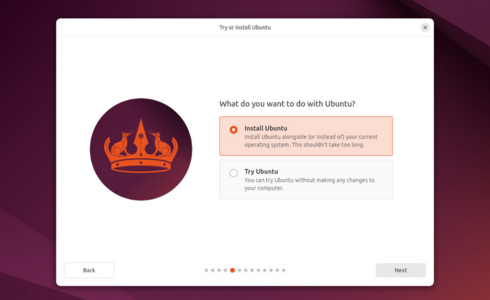
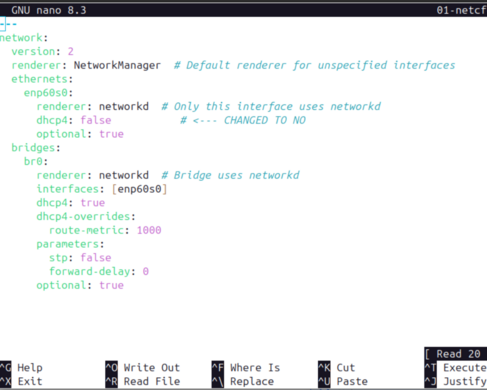

Which version of Ubuntu should you use
Ubuntu comes in two versions:
- Server - No desktop.
- Desktop - Includes the Gnome desktop
Server version (Headless)
I am experienced with Ubuntu, and this is a personal device; the headless server version is my choice. I use SSH to manage the appliance and the scripts don't require the Gnome desktop. The server uses fewer resources since it doesn't run a desktop.
You can connect a monitor and keyboard, but you still use terminal-only tools since the desktop isn't installed. To copy files off the server to another PC, you can use SCP. On a Windows client, the popular putty application has an SCP client. Ubuntu 24.04 has the OpenSSH client built in.
Serial Console cable
If you are building your appliance on a Raspberry Pi 5, I recommend purchasing the serial console cable. It allows you to configure the Pi from your laptop if the Pi doesn't have an IP Address or you have locked yourself out with the firewall.
Desktop Version
If you are new to Linux and building appliances, use the desktop version. The desktop version of Ubuntu uses the GNOME desktop, which is similar to a Windows desktop. It includes LibreOffice Calc (spreadsheet), allowing you to manage the firewall configuration file from the appliance.
With the desktop version, you can use a keyboard, mouse, and monitor (KVM) to configure the Pi using GUI tools like Gnome Text Editor, File Manager, Local Send, etc. Local Send is a free, open-source Flatpak app that allows you to move files between two systems. It supports Windows, Mac, Linux, Android, and iOS. On a Windows client, the popular putty application has an SCP client.
The other advantage is that you can register with Canonical for Ubuntu Pro at $25/year vs. $300/year for the server version. The Ubuntu Pro is a great deal. You get automatic updates and most do not require a reboot. The appliance will stay patched for at least one quarter with no user intervention.
Installation
The steps to install Ubuntu on a Raspberry Pi 5 with an NVME drive are different than installing on an Intel PC or virtual machine.
During the installation on a Raspberry Pi 5 or Intel box:
- Use
haasas the username, all lowercase, and use a simple password that you can type with both hands on the keyboard. You will be typing the password a lot during the creation of the appliance. - Use
haasas the hostname, all lowercase. You can use anything, but the examples usehaas.
The code in the rest of the setup expects the username to be haas, which creates a home directory at /home/haas, used in all the examples in the guide. When the appliance is ready for production, change the password to a long and complex password. Save it in a password manager so that you don't forget it.
For ease of logging into the appliance, create ssh keys as shown here - Use SSH Keys.
Raspberry Pi 5 install
Once you have decided on a version, follow these instructions to complete the installation. The instructions are from the Wolf Paulus blog, he does a great job, and I didn't see that I could do any better!
Regardless of which version you want for production, install the desktop version of Raspberry Pi OS for the first step.
Note
Read the instructions below before you do the install to the nvme drive.
Copy files to a PC
As stated in the Wolf Paulus blog, you need to copy files off the Raspberry Pi 5 before installing Ubuntu to the NVME drive. You can copy the cmdline.txt, network-config, user-data files to a flash drive or use scp to a laptop.
To copy from the RPi to my laptop at 192.168.10.138
- scp /boot/firmware/user-data mhubbard@192.168.19.138:/home/mhubbard/Downloads
- scp /boot/firmware/network-config mhubbard@192.168.19.138:/home/mhubbard/Downloads
- scp /boot/firmware/cmdline.txt mhubbard@192.168.19.138:/home/mhubbard/Downloads
Copy back to the Pi
After Ubuntu is installed, but before booting for the first time:
- sudo scp mhubbard@192.168.19.138:/home/mhubbard/Downloads/user-data /mnt/nvfat
- sudo scp mhubbard@192.168.19.138:/home/mhubbard/Downloads/network-config /mnt/nvfat
- sudo scp mhubbard@192.168.19.138:/home/mhubbard/Downloads/cmdline.txt /mnt/nvfat
Ubuntu is version 24.04.3 now
Below are updated links to wget 24.04.3.
Server installer
cd ~
wget https://cdimage.ubuntu.com/releases/24.04.3/release/ubuntu-24.04.3-preinstalled-server-arm64+raspi.img.xz`.
Desktop installer
cd ~
`wget https://cdimage.ubuntu.com/releases/24.04.3/release/ubuntu-24.04.3-preinstalled-desktop-arm64+raspi.img.xz`
Intel install
Just like for the Raspberry Pi 5, there are a lot of quality tutorials on installing Ubuntu 24.04. I'm not going to document that in this guide.
Server Install Here is a link to the official Canonical tutorial - Install Ubuntu server
If you need instructions to create a bootable flash drive - Open the Desktop link below and it explains how to use Rufus to create a flash drive. For a virtual machine you will use the ISO image that you downloaded.
Desktop install Here is a link to the official Canonical tutorial - Install Ubuntu Desktop
When you get to this screen:

Select Install Ubuntu and click next.
Note
From here on out the steps apply whether you installing on an Raspberry Pi 5 or an Intel based devices.
Configure Nano
Nano is a terminal text editor built into most Linux distributions and you will need to use it initially, so it's worth spending a couple minutes customizing it. From the terminal run:
Note hte dot in front of the file. In Mac/Linux that means it's a hidden file. You must include the do or nano won't read it.
Paste the following into the file:
Press ctrl+s and ctrl+x to save and exit.
Now when you open Nano it will lint (colorize) bash scripts, python, xml, html, man pages, etc. You can use ls -l /usr/share/nano/*rc to view all of the file types that Nano supports.
This also sets:
- autoindent - automatically indent a newly created line to the same level of indentation (tabs and/or spaces) as the previous line.
- historylog - Save the last hundred search strings and replacement strings and executed commands, so they can be easily reused in later sessions.
- linenumbers - Display line numbers to the left of the text area.
- regexp - Do extended regular expression searches by default.
- smarthome - Make the Home key smarter. When Home is pressed anywhere but at the very beginning of non-whitespace characters on a line, the cursor will jump to that beginning (either forwards or backwards). If the cursor is already at that position, it will jump to the true beginning of the line.
- tabsize 4 - Use a tab size of number columns.
- tabstospaces - Convert typed tabs to spaces.
Here is a screenshot of an Ubuntu server netplan yaml file after the nano updates:

You can find a detailed list of nanorc options at NANORC
Change the shell to zsh
When the Ubuntu installation is complete and you have rebooted, follow these instructions to configure the terminal for ease of use. I wrote that procedure on Ubuntu 18.04 and have updated it as versions have changed. It will make the appliance's terminal use much easier.
If you skip this step, not recommended, replace .zshrc with .bashrc where you see it in the documentation.
Static IP address
The desktop version uses a GUI to change IP address configuration. Go to the system menu, which is accessible from the top-right screen corner, click the gear icon, then network. The network settings dialog is very similar to Windows 11. Here is a screenshot:

Ubuntu server doesn't have a GUI to change IP address settings. You have to modify a yaml file in the /etc/netplan directory. On the server version to use a static IP address instead of DHCP, replace /etc/netplan/91-nw-init.yaml with this yaml file:
- Replace eth0 with the actual interface name (use ip link to find it, often eth0 or enp1s0 on Pi 5)
- Replace 192.168.1.100/24 with the desired static IP and subnet
- Replace 192.168.1.1 with the actual gateway IP
- Replace DNS servers (8.8.8.8, 8.8.4.4) with appropriate ones for the shop network
- The stp: false and forward-delay: 0 parameters disable Spanning Tree Protocol and reduce network startup delay
In general, do not use a public DNS server address. Your company security policy SHOULD require you to use their DNS Server or Proxy server. Bypassing either could allow the appliance to contact a control and command C2 server on the Internet without detection!
Use ip link to find the actual interface name on your device. As you can see the interface is eth0. On an Intel installation it will probably be something like enp60s0 on physical hardware or ens33 on a virtual installation. Here is the output on my Raspberry Pi 5 with Ubuntu server 24.04.3.
1: lo: <LOOPBACK,UP,LOWER_UP> mtu 65536 qdisc noqueue state UNKNOWN mode DEFAULT group default qlen 1000
link/loopback 00:00:00:00:00:00 brd 00:00:00:00:00:00
2: eth0: <BROADCAST,MULTICAST,UP,LOWER_UP> mtu 1500 qdisc pfifo_fast state UP mode DEFAULT group default qlen 1000
link/ether 88:a2:9e:43:4d:de brd ff:ff:ff:ff:ff:ff
3: wlan0: <BROADCAST,MULTICAST,UP,LOWER_UP> mtu 1500 qdisc pfifo_fast state UP mode DORMANT group default qlen 1000
link/ether 88:a2:9e:43:4d:df brd ff:ff:ff:ff:ff:ff
Use the following code to create a backup and then edit the yaml file:
Replace the 91-nw-init.yaml with the name of the file you find with the ls -l command.
Note
The yaml file might not be named "91-nw-init.yaml" depending on the version you install. If that is the case, substitute the actual filename. On the server version the file should be named 50-cloud-init.yaml.
Apply the configuration
Yaml is very particular about indentation. Ubuntu provides netplan try that will show any errors in the yaml file.
Verify the configuration
Show the processor
The Raspberry Pi uses Advanced RISC Machine (ARM) architecture vs the Intel x86 in your laptop. You can use the standard Linux command `List CPU - lscpu' to display the CPU in your device:
Architecture: aarch64
CPU op-mode(s): 32-bit, 64-bit
Byte Order: Little Endian
CPU(s): 4
On-line CPU(s) list: 0-3
Vendor ID: ARM
Model name: Cortex-A76
Model: 1
Thread(s) per core: 1
Core(s) per cluster: 4
Socket(s): -
Cluster(s): 1
Stepping: r4p1
CPU(s) scaling MHz: 62%
CPU max MHz: 2400.0000
CPU min MHz: 1500.0000
BogoMIPS: 108.00
In this example I ran it on an Raspberry Pi 5.
Linux List commands
You can get a list of all ls commands by typying ls and pressing tab. You can google or use man lscommand to see help on any ls command. Some useful ls commands:
- ls - list files in current directory
- lsattr - list file attributes on a Linux extended file system
- lsblk - list block storage devices line SD cards, USB Flash Drives, NVMEs.
- lsb_release - the
-aoption displays all information about a release. - lshw - list hardware - A detailed list of installed hardware.
- lslocks - list local system locks
- lsof - list open files. example sudo lsof -i -n | grep localsend to see the PID and IPv4 info.
- lsusb - list all USB devices
procs - not an ls command but very userful - example procs localsend will show the localsend app's PID, CPU/Mem data, filepath
Use SSH keys
Ubuntu supports using ssh keys instead of usernames/passwords for logging in over ssh. The advantage is that it's near impossible to brute force ssh keys compared to brute forcing a password. You can create more than one set of keys to be used with the appliance. If you have an MSP/MSSP that manages servers, you can create a set of keys for their use. If you ever replace them, you just delete their key on the appliance and they can no longer log in.
The process to create ssh keys is very similar on Mac/Windows/Linux and will take less than 5 minutes to set it up.
Windows 11 25H2
Windows 11 includes the OpenSSH package now. The command to create a key pair is the same as on Linux or Mac. Open the PowerShell terminal and enter the following to create an ed255519 key pair.:
Generating public/private ed25519 key pair.
Enter file in which to save the key (C:\Users\mhubbard.PU/.ssh/id_ed25519): id_haas
id_haas already exists.
Overwrite (y/n)? y
Enter passphrase (empty for no passphrase):
Enter same passphrase again:
Your identification has been saved in id_haas
Your public key has been saved in id_haas.pub
The key fingerprint is:
SHA256:h6lAMwPk2aF6M66kN5p11KBNCFL5NJfRjCbcytYRnaU Haas
The key's randomart image is:
+--[ED25519 256]--+
|oo+o..oO o. |
|.o.*=.B =. |
| =+OB .E |
| . ==*. o |
|. =.+ . S . |
| o + . . . |
| .o . . |
|o+o. |
|=o . |
+----[SHA256]-----+
Notice that I changed the key name to:
id_haas
This isn't strictly necessary but I like to name my keys since I uses ssh with keys to log into many different systems.
I also entered a passphrase for the keys. When logging in using the id_haas private key, you will be prompted to enter the passphrase. Why would I use a passphrase when I just said that keys are hard to brute force?
Keys are difficult to brute force, but if you forget to lock your workstation and walk away someone can copy the private key from C:\Users\mhubbard.PU/.ssh and then log in with out being prompted. The passphrase is a way to prevent that. I don't use a long, complex, impossible to type passphrase but it's random characters that would take some time to brute force with Hashcat or John the Ripper.
I wrote a PowerShell script a while back that I keep on a flash drive. If a user forgets to lock their workstation this script will search every drive for Keepass database files and copy them to the flash drive. It could easily be modified to copy private keys now that Microsoft supports ssh. I wrote the script as an educational tool so show people what can happen if they don't lock their workstations when they walk away. Think "working in a coffee shop and running to the bathroom".
The -c Haas in the ssh-keygen command creates a comment for the comment that is stored with the key.
- -l - Show fingerprint of specified public key file. If combined with -v, a visual ASCII art representation of the key is supplied with the fingerprint.
Run this command to view the hey's fingerprint:
256 SHA256:h6lAMwPk2aF6M66kN5p11KBNCFL5NJfRjCbcytYRnaU Haas (ED25519)
+--[ED25519 256]--+
|oo+o..oO o. |
|.o.*=.B =. |
| =+OB .E |
| . ==*. o |
|. =.+ . S . |
| o + . . . |
| .o . . |
|o+o. |
|=o . |
+----[SHA256]-----+
Copy the key
Windows didn't implement the ssh-copy-id script from the OpenSSH project for some reason. Here is how to use PowerShell to copy the key to the appliance:
PS C:\Users\mhubbard.PU> type $env:USERPROFILE\.ssh\id_haas.pub | ssh -p 3333 haas@192.168.10.127 "mkdir -p ~/.ssh && cat >> ~/.ssh/authorized_keys && chmod 600 ~/.ssh/authorized_keys && chmod 700 ~/.ssh"
The authenticity of host '[192.168.10.127]:3333 ([192.168.10.127]:3333)' can't be established.
ED25519 key fingerprint is SHA256:0/RO4plpIpA6dw7EASpfdACx5KmqXT19oUjlyIRmffs.
This key is not known by any other names.
Are you sure you want to continue connecting (yes/no/[fingerprint])? yes
Warning: Permanently added '[192.168.10.127]:3333' (ED25519) to the list of known hosts.
haas@192.168.10.127's password:
The $env:USERPROFILE\ expands out to your full user path.
I had to use -p 3333 because I had changed the port that is used for ssh.
The message about `The authenticity of host can't be established is because the appliance has a set of ssh keys and it offered its key to the W11 box. If you logged in initially with a password you could run:
To verity that you are indeed copying the keys to the appliance.
View the comment
On the appliance, run:
ssh-ed25519 AAAAC3NzaC1lZDI1NTE5AAAAIIe4VtZB4+t8LAWPLT54qMWRI5NgwIU7/SoIMYtWl4Tu Haas
ssh-ed25519 AAAAC3NzaC1lZDI1NTE5AAAAIBt1FUYKmKsS98KZBEjLSdg95dCTydiB54SeNAAt2V7m Haas-223
You will see the comment at the end of the key. It makes identifying keys easier if you manage many servers. The second key Haas-223 is a key from another device that has an IP ending in .223. You can make up a convention if you adopt using keys.
Linux/Mac
Open the terminal and enter the following to create an ed255519 key pair.:
Generating public/private ed25519 key pair.
Enter file in which to save the key (/home/mhubbard/.ssh/id_ed25519): id_haas
Enter passphrase for "haas" (empty for no passphrase):
Enter same passphrase again:
Your identification has been saved in haas
Your public key has been saved in haas.pub
The key fingerprint is:
SHA256:OzzMu5XQjcXeG5Rks2hV2tSZ/jFq8QoPeTJy/w9QkgI
The key's randomart image is:
+--[ED25519 256]--+
| E =.*|
| . . * X.|
| . B B .|
| . B * + |
| S o = * +|
| + + O = +.|
| B = X + |
| = + . |
| o. ..o|
+----[SHA256]-----+
Notice that I changed the key name to:
/home/mhubbard/.ssh/haas
This isn't strictly necessary but I like to name my keys since I uses ssh with keys to log into many different systems. Also notice that I entered a passphrase for the keys. When logging in using the id_haas private key, you will be prompted to enter the passphrase. Why would I use a passphrase when I just said that keys are hard to brute force?
Keys are difficult to brute force, but if you forget to lock your workstation and walk away someone can copy the private key from C:\Users\mhubbard.PU/.ssh and then log in with out being prompted. The passphrase is a way to prevent that. I don't use a long, complex, impossible to type passphrase but it's random characters that would take some time to brute force with Hashcat or John the Ripper.
I wrote a PowerShell script a while back that I keep on a flash drive. If a user forgets to lock their workstation this script will search every drive for Keepass database files and copy them to the flash drive. It could easily be modified to copy private keys now that Microsoft supports ssh. I wrote the script as an educational tool so show people what can happen if they don't lock their workstations when they walk away. Think "working in a coffee shop and running to the bathroom".
Copy the key over
Linux and Mac support the OpenSSH tool ssh-copy-idfor moving the public key to a host. Run the following:
/usr/bin/ssh-copy-id: INFO: Source of key(s) to be installed: "/home/mhubbard/.ssh/haas.pub"
/usr/bin/ssh-copy-id: INFO: attempting to log in with the new key(s), to filter out any that are already installed
/usr/bin/ssh-copy-id: INFO: 1 key(s) remain to be installed -- if you are prompted now it is to install the new keys
haas@192.168.10.127's password:
Number of key(s) added: 1
Now try logging into the machine, with: "ssh -i /home/mhubbard/.ssh/haas -p 3333 'haas@192.168.10.127'"
and check to make sure that only the key(s) you wanted were added.
The -i is used to name the key to copy. Since I have many public keys on this system I had to explicitly name the key to copy.
I had to use -p 3333 because I had changed the port that is used for ssh.
The message "Now try logging into the machine..." is because even though you see the pre-login banner and enter the password, you don't have a user login. Once the key is copied, the session ends.
The message about `The authenticity of host can't be established is because the appliance has a set of ssh keys and it offered its key to the W11 box. If you logged in initially with a password you could run:
To verity that you are indeed copying the keys to the appliance.
View the key comment
On the appliance, run:
ssh-ed25519 AAAAC3NzaC1lZDI1NTE5AAAAIIe4VtZB4+t8LAWPLT54qMWRI5NgwIU7/SoIMYtWl4Tu Haas
ssh-ed25519 AAAAC3NzaC1lZDI1NTE5AAAAIBt1FUYKmKsS98KZBEjLSdg95dCTydiB54SeNAAt2V7m Haas-223
You will see the comment at the end of the key. It makes identifying keys easier if you manage many servers. The second key Haas-223 is a key from another device that has an IP ending in .223. You can make up a convention if you adopt using keys.
If you try to login now
You will be asked for the passphrase, then logged into the appliance.
I can log in without including the -i /home/mhubbard/.ssh/haas and the ssh client will try all of the keys in ~/.ssh directory until it finds a match. But that will add a significant delay since I have a lot of keys. After you type the command to login once it will be in your history so you don't have to type all of it.
create an alias
Press ctrl+s and ctrl+x to save and exit. Then run:
to reload the shell. Now you type haas and log in!
Hardware Security Modules (HSM)
Companies like Yubico and Google offer hardware keys to store your ssh private keys on. They are out of scope for this document, but you can go to Yubico Security Key and read up. One caution, if you lose the HSM and didn't make a backup it's a bad day. Just saying...
You may want to buy two HSMs and keep one locked in a safe place.
Use IPv6
If you don't mind learning a little IPv6, you can SSH to the Pi over IPv6 even if it doesn't have an IPv4 address. This is only for the initial configuration of Ubuntu. Once you run the haas_firewall_install.sh script you are limited to IPv4. The reason is that the configure_ufw_from_csv.sh script doesn't support IPv6 for Administrators. As my dad used to say "Son, you ran out of talent on that one." I plan to add it in the future if there is demand for the feature.
If you followed the Paulus blog, add dhcp6: true to the netplan yaml file
Use the following to find the IPv6 address:
2: eth0: <BROADCAST,MULTICAST,UP,LOWER_UP> mtu 1500 qdisc pfifo_fast state UP group default qlen 1000
link/ether 88:a2:9e:43:4d:de brd ff:ff:ff:ff:ff:ff
inet 192.168.10.137/24 metric 100 brd 192.168.10.255 scope global dynamic eth0
valid_lft 28463sec preferred_lft 28463sec
inet6 fe80::8aa2:9eff:fe43:4dde/64 scope link
valid_lft forever preferred_lft forever
The fe80::8aa2:9eff:fe43:4dde is an IPv6 link local address. It's similar to an IPv4 APIPA, but it's the same every time the device starts up. It is created using the EUI-64 format, which is based on the 48-bit MAC address.
Note
The EUI-64 (Extended Unique Identifier) format is a 64-bit interface identifier used in IPv6 to automatically generate host addresses from a 48-bit MAC address. This process involves splitting the MAC address, inserting FFFE in the middle, and flipping the 7th bit (universal/local bit) of the first byte.
What flipping the 7th bit looks like:
How to ssh to this IPv6 address
macOS wireless interface en0 Use the following command to ssh from a MacBook:
Linux with wireless interface wlp61s0 Use the following command to ssh from a Linux laptop:
Windows Use these commands to ssh from a Windows laptop:
Idx Met MTU State Name
--- ---------- ---------- ------------ ---------------------------
5 25 1500 connected Ethernet
12 25 1500 connected Wi-Fi
Now use:
Warning
Windows Wi-Fi interface don't support IPv6 Neighbor Discovery reliably. If you want to use this method, connect your laptop to ethernet.
You can use the following command to see if the Raspberry Pi 5 is visble from a Windows machine:
As always, Windows uses a non-standard method for an industry standard🙁.
IPv6 Link Local addresses
IPv6 link‑local + EUI‑64 is the industry standard for zero‑touch provisioning. Switches, routers, firewalls, PDUs, storage arrays, OT gear — they all do it.
And Linux handles it flawlessly.
Windows is the outlier.
🧩 Why IPv6 link‑local + EUI‑64 is brilliant
- Every NIC has a MAC
- EUI‑64 turns that MAC into a deterministic IPv6 address
- You can derive the link‑local address instantly
- No DHCP
- No RA (IPv6 Router Advertisement)
- No SLAAC (Stateless Address Autoconfiguration)
- No guessing
- No APIPA garbage
- No vendor‑specific discovery tools
- No proprietary protocols
- No broadcast storms
- No “magic IP” like 192.168.1.1
- It’s elegant.
- It’s predictable.
- It’s universal.
- It’s how IPv6 was meant to be used.